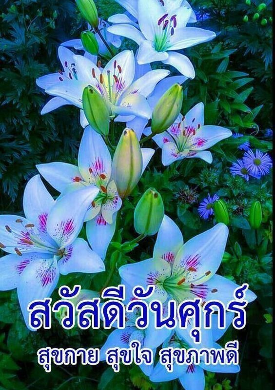

รวมดอกไม้ในไทย ๘๙ ชนิด
 POSTJUNG หน้าแรก ตรวจหวย โปรโมชั่น เว็บบอร์ด ควิซ การเงิน Pic Post Page หาเพื่อน Chat หาเพื่อน Line หาเพื่อน Skype อัลบั้ม แต่งรูป คำคม Glitter สเปซ ไดอารี่ เกมถอดรหัสภาพ เกม วิดีโอ คำนวณ คำนวณค่างวดผ่อนรถ ติดต่อเว็บไซต์ ลงโฆษณา ลงข่าวประชาสัมพันธ์ แจ้งเนื้อหาไม่เหมาะสม เงื่อนไขการให้บริการ Login เข้าสู่ระบบ สมัครสมาชิก ตรวจหวย วันที่ 16 กุมภาพันธ์ 2564 (รางวัลที่1 424603) เว็บบอร์ด บอร์ดต่างๆ ค้นหา สร้างบอร์ด ตั้งกระทู้ใหม่รวมดอกไม้ในไทย ๘๙ ชนิด
บอร์ด สาระ เกร็ดน่ารู้ โพสท์โดย I AM THOR
๑.ดอกราชพฤกษ์ (คูน)
*ดอกไม้ประชำชาติไทย
๒.ดอกปีบ (กาสะลอง)
*ดอกไม้ประจำวิชาชีพ พยาบาล
๓.ดอกขจร(สลิด)
*เป็นไม้มงคลเชื่อว่าบ้านใดปลูกไว้ บ้านนั้นจะมีชื่อเสียงขจรขจายดังชื่อ
๔.ดอกกล้วยไม้ ช้างกระ
*ดอกกล้วยไม้ เป็นดอกไม้ประจำวิชาชีพ ครู
๕. ดอกอัญชัญ
*คนโบราณมักจะนำดอกอัญชัน มาสกัดเอาน้ำมาทำสีผสมอาหาร ทำขนมรวมไปถืงเป็นยาสระผมเพราะช่วยทำให้ผมมีสีดำสวย
๖.ดอกแคแสด
๗.ดอกยี่หุบ
๘.ดอกหางนกยูง
๙.ดอกลีลาวดี(เดิมชื่อลั่นทม)
*เดิมเป็นไม้อัปมงคล บ้านใดปลูก จะมีแต่ความทุกข์ระทม ตามชื่อของมัน
๑๐.ดอกรัก
*บ้านใดปลูกก็จะมีคนรักใคร่ เป็นไม้มงคล
๑๑.ดอกราชาวดี
๑๒.ดอกกันเกรา(มันปลา)
*เป็นไม้มงคล กันสิ่งชั่วร้ายทั้งหลายไม่ให้มาทำอันตรายใดๆ
๑๓.ดอกดาหลา
๑๔.ดอกกระดังงา
๑๕.ดอกจามจุรี (ต้นก้ามปู)
๑๖.ดอกยี่สุ่น(กุหลาบมอญ)
๑๗.ดอกบานไม่รู้โรย
๑๘.ดอกชบา
๑๙.ดอกทองกวาว
๒๐.ดอกบุนนาค
๒๑.ดอกพวงชมพู
๒๒.ดอกกัลปพฤกษ์
๒๓.ดอกลำดวน
๒๔.ดอกจำปา
๒๕.ดอกแก้ว
๒๖.ดอกมะลิ
ดอกไม้ประจำวันแม่
๒๗.ดอกตะแบก
*คนมักจะสับสน ระหว่าง ตะแบก อินทนิล อินทนิลน้ำ(ยี่เข่ง) และ เสลา ซึ่งคล้ายกันมาก
๒๘.ดอกพุดตาน
๒๙.ดอกยี่เข่ง (อินทนิลน้ำ)
๓๐.ดอกเล็บมือนาง
๓๑.ดอกจันทร์กระพ้อ
*คนโบราณนิยมนำมันมาทำน้ำอบน้ำปรุง
๓๒.ดอกดาวเรือง
๓๓.ดอกบัวหลวง
*มักนิยมใช้ไหว้พระ
๓๔.ดอกประยงค์
๓๕.ดอกยี่โถ
๓๖.ดอกนางพญาเสือโคร่ง
*ได้รับสมยาว่า ซากุระแดนสยาม
๓๗.ดอกประดู่
ดอกไม้ประจำกองทัพเรือ
๓๘.ดอกอินทนิล
๓๙.ดอกบัวเผื่อน
๔๐.ดอกบัวแดง
๔๑.ดอกบุหงาส่าหรี
๔๒.ดอกเสลา
๔๓.ดอกพิกุล
๔๔.ดอกราตรี
๔๕.ดอกผกากรอง
๔๖.ดอกสายหยุด
๔๗.ดอกพุทธรักษา
*ดอกไม้ประจำวันพ่อ
๔๘.ดอกเข็ม
๔๙.ดอกบัวสวรรค์
๕๐.ดอกบานชื่น
๕๑.ดอกเฟื่องฟ้า
๕๒.ดอกกระเจียว (ปทุมมา)
๕๓.ดอกชงโค
๕๔.ดอกกระโดน
๕๕.ดอกบานบุรี
๕๖.ดอกสาละ
๕๗.ดอกกรรณิการ์
๕๘.ดอกชมนาด
๕๙.ดอกช้องนาง
๖๐.ดอกสารภี
๖๑.ดอกนนทรี
๖๒.ดอกโสน
๖๓.ดอกหงอนไก่
๖๔.ดอกพุดซ้อน
๖๕.ดอกจิก
๖๖.ดอกมนฑา
๖๗.ดอกการะเวก
*ระวังจะสับสนกับดอกกระดังงา
๖๘.ดอกกาหลง
๖๙.ดอกรสสุคนธ์
๗๐.ดอกแพงพวย
๗๑.ดอกซ่อนกลิ่น
๗๒.ดอกสุพรรณิการ์ (ดอกฝ้ายคำ)
๗๓.ดอกเอื้องผึ้ง
๗๔.ดอกอังกาบ
๗๕.ดอกต้อยติ่ง
๗๖.ดอกชวนชม
๗๗.ดอกแก้วเจ้าจอม
๗๘.ดอกปาริชาติ
*ระวังจะสับสนกับดอกทองกวาว
๗๙.ดอกนางแย้ม
๘๐.ดอกรำเพย
๘๑.ดอกพยอม
๘๒.ดอกเอื้องสายหลวง
๘๓.ดอกวาสนา
๘๔.ดอกผักตบชวา
๘๕.ดอกเอื้องคำ
๘๖.ดอกเอื้งสามปอย
๘๗.ดอกลำเจียก
๘๘.ดอกโบตั๋น
๘๙.ดอกตีนเป็ด
จบแล้วนะครับ
โปรโมชั่น Shein ส่วนลด GoWabi ส่วนลด Central คูปอง Hotels.com
ที่มา: http://www.jetovimut.com/forum/index.php?topic=718.0ขอบคุณเจ้าของภาพถ่ายทุกๆภาพที่ได้ถ่ายมาให้คนรุ่นใหม่ได้เห็นดอกไม้ที่อาจจะหาดูได้ยากในปัจจุบัน Tags ดอกไม้ ดอกไม้ไทย ชื่อดอกไม้ไทย รายชื่อดอกไม้ ⚠ แจ้งเนื้อหาไม่เหมาะสม
โพสท์โดย: I AM THOR 7Y เป็นกำลังใจให้เจ้าของกระทู้โดยการ VOTE และ SHARE 1757 VOTES ( 4.8 / 5 จาก 366 คน) VOTED: ยัยแว่นโก๊ะมาแล้ว, แมวโย่ว์, Await, Thorsten, NG, Teangmodog, phakri, Seksit, MoreFuture, karn23, lalazlampy, zerotype, สาวๆ ทักมาจะยินดีมาก, Tabebuia, The Peachband, newwin, oLuxo, ณ เหนือ, Big Boy, มนตรา, โก๊ะทอง, makhamdong, seasky, How are u today, นนท์คัฟ, FolkZaa, Noina stupid, ห่วงใย ผูกพัน, นัยครับ, ginger bread, fewUBN, กะเบน, ไม้, แจ๋วยูนิเวอร์ส, GUNNER, mayuuu, ยางามิ ไลท์, พริ้มพลอย กระทู้ที่มีคอมเม้นต์ล่าสุด สิ่งแปลกปลอมในเนื้อหมู ประมาท หรือ ไม่ได้มาตรฐาน กระทู้ล่าสุด ขอประจานป้าคนนี้หน่อยเหอะ!!! อ่านกันให้จบ Twitter เริ่มติดป้ายกำกับบัญชีเจ้าหน้าที่ของรัฐ และบัญชีองค์กรสื่อในเครือของรัฐ พิชซ่าทอด คุณปู่วัย 99 ปี เดินทางลงทะเบียน เราชนะ กลุ่มไม่มีสมาร์ทโฟน ดูทั้งหมด ตั้งกระทู้ใหม่ Hot Topic ที่น่าสนใจอื่นๆ หนุ่มโพสต์ ออมเงินให้ลูกๆ ก่อนเอาออกมานับ เห็นยอดเงินแล้วตะลึง!! ส้วม..สภาหมื่นล้าน โกลาหล! น้ำไม่ไหล รับศึกซักฟอก วันที่ 2 Twitter เริ่มติดป้ายกำกับบัญชีเจ้าหน้าที่ของรัฐ และบัญชีองค์กรสื่อในเครือของรัฐ ซอยเอกมัย 30 สภาพสลัม ในย่านหรู อ้น สราวุธ เปิดใจ คลิปหลุด ในอดีต กว่าจะผ่านมาได้ไม่ง่าย สุดเวทนา! 2 ผู้เฒ่าพิการ ครองรักบนกองขยะ นานนับปี คุ้ยขยะเป็นอาหารประทังชีวิต ขายของแบบธรรมดาโลกไม่จำ ใครรับผิดชอบ!? ตกไปมีตๅย โชคดีคนกระโดดออกทัน #ดีอีเอส เพ่งเล็ง แอพ #Clubhouse เตือนอย่าละเมิดสิทธิ์ผู้อื่นระวังถูกดำเนินคดี สุดสงสาร 2 ตายาย ออกจากบ้านเที่ยงคืน มาถึงธนาคารตี 4 เพื่อลงทะเบียน เราชนะ หนุ่มโพสต์ภาพ วันวาเลนไทน์ ไม่มีสาวให้กอด มีแค่ลูก หนุ่มตักปลาจากคลอง เห็นสีสวย พอรู้ความจริงถึงกับอึ้ง นก สินจัย กล่าวยึดติดกับคำว่า รัฐประหาร มากเกินไปหรือเปล่า กระทู้อื่นๆในบอร์ด สาระ เกร็ดน่ารู้ พอดีหนูเก็บหมูได้ที่ข้างถนน ไม่รู้ใครทำหล่นไว้ และไม่รู้จะทำยังไงกับหมูต่อดี มอเตอร์เวย์แห่งใหม่ของจีนสร้างขึ้นเหนือน้ำ หนึ่งตารางไมล์แห่งความหวัง: แพเรือแคนูและเรือคายัคที่ใหญ่ที่สุด Santa Justa Elevator ในลิสบอน ตั้งกระทู้ใหม่